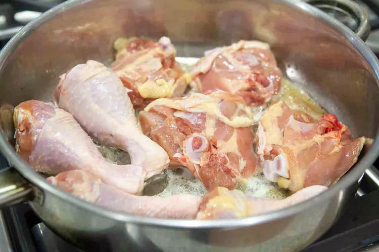
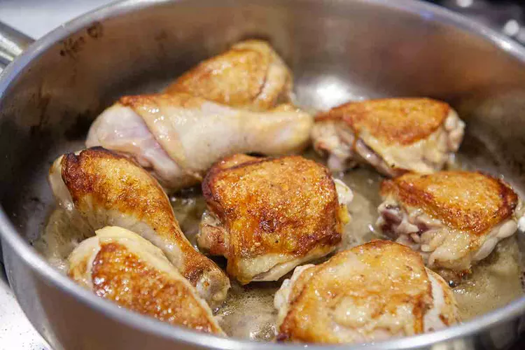
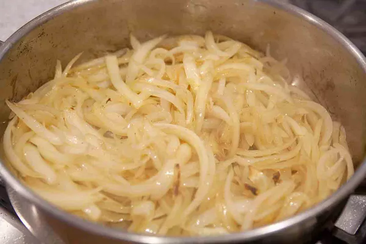
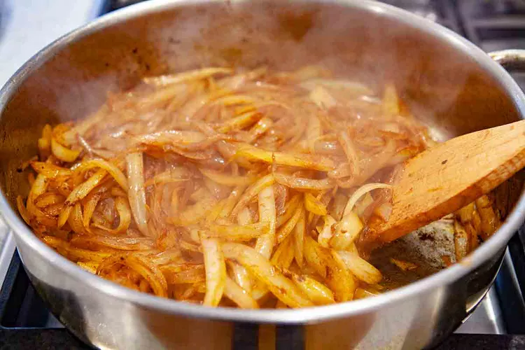
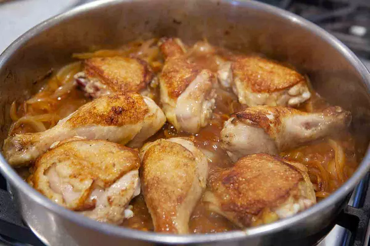
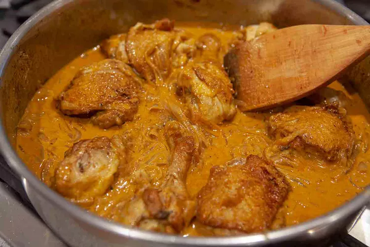

Chicken, onions, butter, stock, paprika, salt, sour cream. That's about it, and all you need for one of the best dishes on the planet, chicken paprikash. Uncomplicated. Unpretentious. So good you'll be drinking the sauce! Cooks up quickly too. Serve it with noodles or dumplings
Sprinkle the chicken well with salt and set aside at room temperature.
Slice the onions lengthwise (top to root).
Heat a large sauté pan over medium-high heat and melt the butter. When the butter is hot, pat the chicken pieces dry with paper towels and place them skin-side down in the pan.
 Add the sliced onions to the sauté pan and cook them, stirring occasionally,scraping up the browned bits from the chicken, until lightly browned, about 7 minutes.
Add the paprika and black pepper to the onions and stir to combine. Let cook for a minute.
Add the chicken broth, again scraping up the browned bits from the bottom of the pan, and then nestle the chicken pieces into the pan, on top of the onions.
Cover and cook on a low simmer for 20 to 25 minutes (depending on the size of your chicken pieces). When the chicken is cooked through to 165°F, (use a digital thermometer) remove the pan from the heat. (If you want, you can also keep cooking the chicken until it begins to fall off the bone, which may take another 30 minutes or so.)
When the chicken is done to your taste, remove the chicken from the pan. Allow the pan to cool for a minute and then slowly stir in the sour cream and add salt to taste. If the sour cream cools the sauce too much, turn the heat back on just enough to warm it through. Add the chicken back to the pan and coat with the sauce.
Serve with dumplings, rice, egg noodles or potatoes. If cooking gluten-free, serve with rise, potatoes or gluten-free noodles or dumplings.